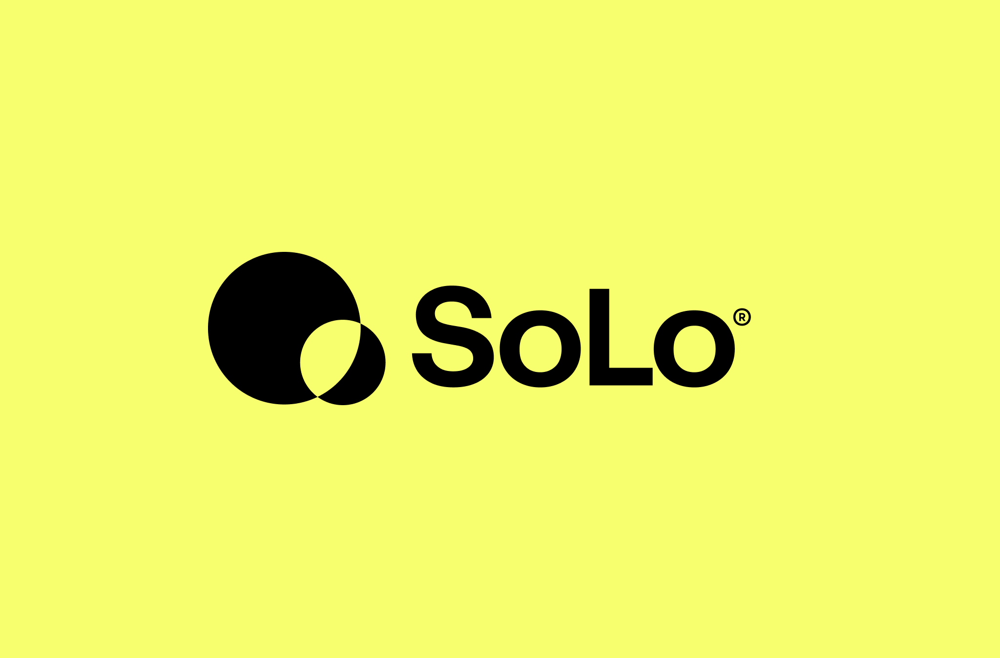
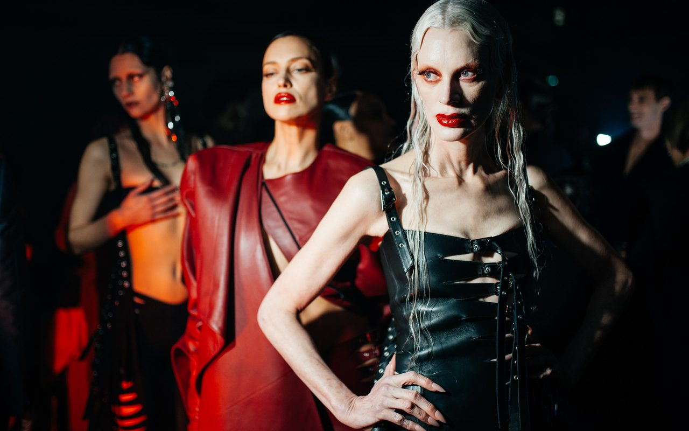
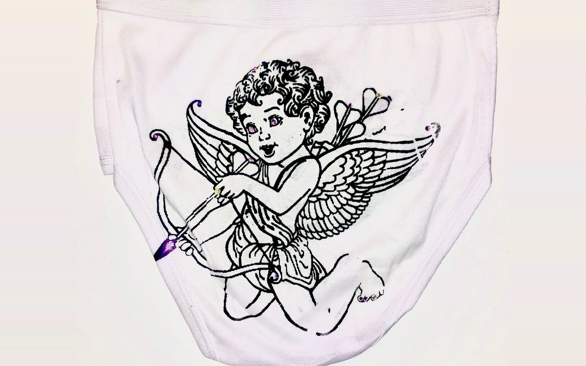

SoLo Funds is a regulated fintech platform for community lending.
A nationally distributed podcast, made in partnership with iHeartRadio and Essence.
Runway, campaign and post-production sound for Mugler’s Fall/Winter 2024 collection, including the exclusive show mix of JT’s “Sideways.”
I directed runway music for SADAK across four seasons at Berlin Fashion Week.
Alibi is Harlem’s last Black gay bar.
Sound for the runway and the club. Formerly SXYLK, now Malik Saaka.
A multi-layered sensory experience that combines my love of philosophy, culture and sound design.
A DJ set for Boiler Room at Patia’s Fantasy World in New York.